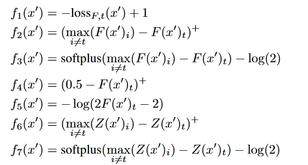
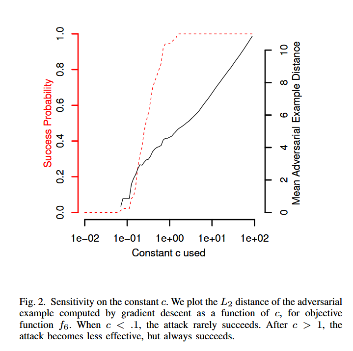
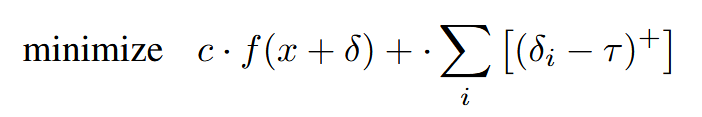
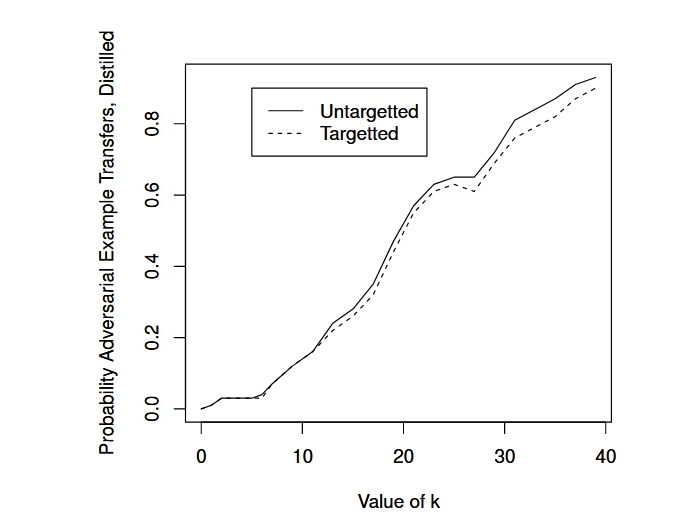

C&W 攻击¶
📖 阅读信息
阅读时间约 11 分钟 | 约 1435 字 | 约 45 个公式 | 没有代码，请放心食用
文章 发表在 IEEE S&P 2017，两位作者都来自加州大学伯克利分校。
本来文章是想针对性提出一种攻击方式来让防御性蒸馏（defensive distillation）破防，不过我觉得攻击方式和一些工程技巧才是重点，因此本文不会太多提及这一（pwned!）的防御方式。
正则化¶
这篇笔记接续上面两篇笔记。让我们来理一下思路：FGSM 攻击引入了梯度上升作为单步的攻击方式，PGD 引入了迭代的对抗样本生成。在 PGD 的笔记中，笔者还讨论了针对攻击的“正则化”问题，也就是需要在某种意义上为人类感知建模，从而控制对抗样本生成处于一种乱乎人之不察的效果。但当时的讨论尚且粗浅，处于一种定性的级别。
在笔者看来，C&W 攻击正是将这种正则化约束给“形式化”了，从而可以实打实地用优化器来跑。
让我们来看看具体是怎么形式化的：原论文的第五节，作者给出了这个量化标准：
第一行表征的是，扰动不能太大，也就是引入一个 \(\mathcal{D}\) 来约束扰动的大小。在实践上，就一般使用方便的范数约束了，即 \(L_0\), \(L_2\), \(L_\infty\) 等范数。
第二行要求攻击成功，将扰动后的样本分类为新的类别 \(t\)。容易看出这个要求和第一行是拮抗的。
最后一行是可行性约束。因为图像本身有灰阶约束 \([0,255]\)，超过的值都会被截断。
后面作者进一步明晰了什么是所谓的“攻击成功”。作为一个优化目标它必须完全可导。为此作者给出了许多种形式的指标：

具体的 notation 请参考原文。它们的共性是，如果攻击后的样本越倾向于被网络分类为 \(t\) 类别，则值越小（但是截断到 0）。\(F\) 和 \(Z\) 分别对应 softmax 和未 softmax 的输出逻辑值。因为本文主要是要破防御性蒸馏的甲，而防御性蒸馏只是重新约束了一下 softmax 的输出 logits，所以如果不取 softmax 的攻击理论上说效果就会好些。
然后很自然地我们引入一个参数 \(c\) 来平衡前两行的指标，这就得到了我们的优化目标：
为了解决值裁切问题，C&W 攻击引入了换元法，也就是让
其中 \(w\) 是一个无约束的自由变量。这样硬裁切就变成了天然纳入约束的自由优化问题。
最后我们就得到了攻击使用的损失：
其中 \(x\) 是原样本，\(w\) 是无约束的自由变量。范数约束可以选择 \(L_0\), \(L_2\), \(L_\infty\) 等，而 \(f\) 可以选择上面的诸多 \(f_i\)。我们可以通过基于梯度的优化器如 Adam 等，对这一损失进行优化，最后还原得到对抗样本。
消融实验¶
针对诸多参数的选择，作者进行了大量的消融实验。所以这篇文章能发 S&P 而不是 ICLR 是有理由的……
对 \(c\) 的选择上，下图体现了样本距离和攻击效果之间的拮抗关系。

图中可以读出在这种情况下作者建议 \(c\in(0.1,1)\)，具体的最佳 \(c\) 值可以通过二分法等方法进行搜索。
下表展示了作者对 \(f\) 所做的消融实验。

这里的三个 case 对应的是对攻击的要求。Best case 只要求给出最容易攻击的类别； Average case 需要随机选择类别并攻击；Worst case 要求对所有的错误类别进行攻击。
图表显示， \(f_6\) 的效果是最好的。
最后作者讨论了对范数的选择。对于 \(L_2\) 范数而言，没有什么特别的问题，直接优化就行了，只不过作者介绍了随机启动的方法，这个我们在 PGD 的笔记中已经介绍过了。
\(L_0\) 范数有点难搞。\(L_0\) 范数统计有多少像素被修改，而这显然是不可导的。因此，作者选择了多步迭代的方法计算。首先使用基于 \(L_2\) 范数的攻击在可行域内得到单步的攻击图像，然后从可行域中丢弃扰动与梯度之积（\(\delta\cdot g\)）最小的像素 \(i\)，直到 \(L_2\) 范数攻击无法找到可行解。对于最有效的 \(c\) 的搜索，作者仍然选择了倍增+二分的搜索方式。
最后，作者实验了基于 \(L_\infty\) 范数的攻击。根据我们先前的讨论，基于这个范数的攻击在样本上会显示为“大色块，小差异”的特征，因而比较有效。但基于梯度的优化方法会导致扰动量一直在 \(0.5\) 附近正负横跳（符号函数是很坏的优化目标，因为除了零点附近，其他位置没有梯度惩罚）
为此作者使用下面的损失函数：

其中 \(\tau\) 初始为 \(1\)，随着 \(\delta_i\) 的变小，直到都小于 \(\tau\) 之后，就自乘 0.9 实现趋于 0 的指数衰减。实质上就是通过衰减的 \(\tau\) 来渐进符号函数的约束。对 \(c\) 的选择类似。
对抗训练¶
作者在剩下的篇幅中证明了其提出的 C&W 攻击足以攻破防御性蒸馏，并验证了其对抗样本的可迁移性。为了在可迁移的情况下继续破防，我们需要让预测输出的差异足够大，大到一个我们手动设定的 \(\kappa\) 值：
实验表明这个值越大破甲的效果越好：

不知道搞出防御性蒸馏的作者们有没有破防，反正防御性蒸馏这个方法是确确实实地破防了。